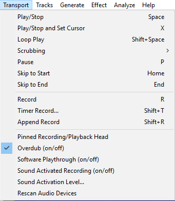

Transport Menu
From Audacity Development Manual
The Transport Menu
- Click, or hover, on any menu item in the image to read about that command.
- 
Play/Stop SPACE
Starts and stops playback. If a region of a track is selected, this command will play only that selection then playback will stop. Otherwise, playback begins wherever the editing cursor is and continues until the end of the project is reached. Starting playback with this command is the same as clicking the Play button  in Transport Toolbar.
in Transport Toolbar.
When there is already playback or recording (or playback or recording is paused), this command stops playback or recording immediately without changing the selection region or the position of the editing cursor. Therefore using any play or record command after stopping with "Play/Stop" will start playback or recording from the same Timeline position it last started from. Stopping playback with this command is the same as clicking the Stop button  in Transport Toolbar.
in Transport Toolbar.
Play/Stop and Set Cursor X
Starts playback exactly like "Play/Stop", but stopping playback (or recording) sets the editing cursor, or the left edge of the selection region, to the stop point so that playback can be resumed from there.
Loop Play SHIFT + SPACE
Plays the selection over and over again. Same as holding the SHIFT key while clicking the Play button  in Transport Toolbar.
in Transport Toolbar.
Scrubbing
Opens a cascading menu where you can start, stop or switch to Scrub play or Seek play, or toggle the Scrub Ruler on/off.
Pause P
Temporarily pauses playing or recording without losing your place. Same as clicking the Pause button  in Transport Toolbar.
in Transport Toolbar.
Skip to Start HOME
Moves the cursor to the beginning of the project. This is useful if you want to play everything, or record a new track starting from the beginning. Same as clicking the Skip to Start button  in Transport Toolbar.
in Transport Toolbar.
Skip to End END
Moves the cursor to the end of the project. Same as clicking the Skip to End button  in Transport Toolbar.
in Transport Toolbar.
Record R
Recording begins on a new track at either the current cursor location or at the beginning of the current selection. Same as clicking the Record button in Transport Toolbar.
Timer Record... SHIFT + T
Brings up the Timer Record setup dialog for scheduling when a recording ends and optionally, when it begins. Pressing "OK" starts the process of recording, or waiting for the recording to start.
For full details of the timer recording function please see the Timer Record page.
Append Record SHIFT + R
Starts recording at the end of the currently selected track(s). Append Record can also be started by holding SHIFT while clicking the Record button in Transport Toolbar. When you hold down the SHIFT key the red record button will change to the Append Record button.
If no tracks are selected, recording will be appended to all tracks. An error will be thrown if attempting to record to more simultaneous channels than your sound device supports.
Pinned Recording/Playback Head
You can change Audacity to play and record with a fixed head pinned to the center of the Timeline. In this mode the head remains static and the waveforms will move as the audio is played or recorded.
Clicking on this command cause the triange button at the left of the Timeline to change to a drawing-pin. This indicates that the play or record head is now pinned to the center of the Timeline and when playing or recording takes place the waveform will move continuously under the fixed head. Clicking on this command againg will revert to unpinned play and record head and the drawingpin changes back to the triangle.
Overdub (on/off)
Toggles on and off the Overdub option in Recording Preferences.
When turned on (indicated by the check mark in the menu item), any existing audio tracks will play when you start recording, according to the state of their Mute/Solo buttons.
Software Playthrough (on/off)
Toggles on and off the Software Playthrough option in Recording Preferences.
When turned on (indicated by the check mark in the menu item), input being recorded will play, but there will be a noticeable delay (latency) before the input is heard. For some examples of setting up equipment to record without playthrough latency, see this Tutorial about Recording overdubs.
| Software Playthrough must be unchecked when recording computer playback because it will create feedback echoes. |
Sound Activated Recording (on/off)
Toggles on and off the Sound Activated Recording option in Recording Preferences. This option can be useful to save disk space when recording an intermittent input, such as a call recording system.
When turned on (indicated by the check mark in the menu item), press the Record button in Transport Toolbar to start the Sound Activated Recording session. Recording will now occur whenever the received input is above the Sound Activation Level you specify (see the menu item below). Recording will pause whenever the received input falls below that level. Press the Stop button to stop the recording session.
Sound Activated Recording can be combined with Timer Record to set the start and end time of a Sound Activated recording.
Sound Activation Level...
Sets the activation level above which Sound Activated Recording will record.
Rescan Audio Devices
Rescan for audio devices connected to your computer, and update the playback and recording dropdown menus in Device Toolbar.